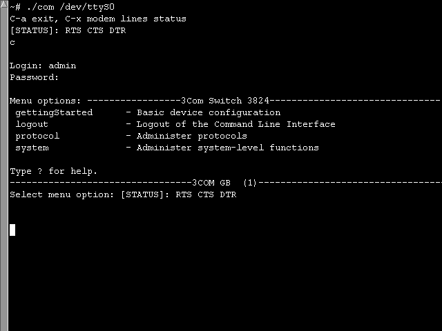

feel free to email me at kefeer@brokestream.com
Small minicom replacement for accessing serial ports (com ports) on Linux inspired by FreeBSD "tip". Mainly intended for use to access serial consoles of various hardware.
If you want more control over port without minicom's ugly menu-driven interface i suggest picocom by Nick Patavalis. Picocom has same spartan interface but much more features.
dterm by Knossos Networks Ltd have a built-in command-line instead of menus. It can do almost everything with serial line. Very nice.
There is a teletype tool written by Clifford Wolf based on tinyserial which is much more advanced.
Download: com.c Building: cc -o com com.c Usage : ./com /dev/device [speed] Example : ./com /dev/ttyS0 [115200] Keys : Ctrl-A - exit, Ctrl-X - display control lines status Darcs : darcs get http://tinyserial.sf.net/ Scr.shot:

Aug 18 17:50:33 UTC 2006: In release 1.0 speed option do not work. Fixed in 1.1.
Dec 20 08:25:29 UTC 2006: Version 2006-12-20 incorporates patch from Jim Kou, jimkou@malico.com.tw which fixes compiler warnings.
Sep 9 09:27:49 UTC 2008: Version 2008-09-09 patch from Jon Miner fixes cursor control problems.
Mar 5 06:14:26 UTC 2009: Version 2009-03-05 patch from Alan Horstmann fixes bug in com port reading and adds handling of EINTR.